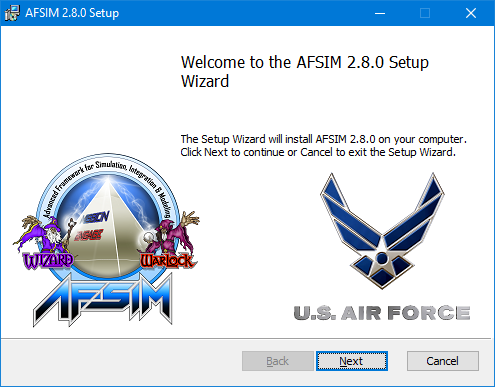
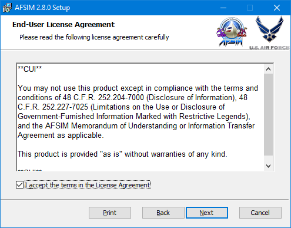
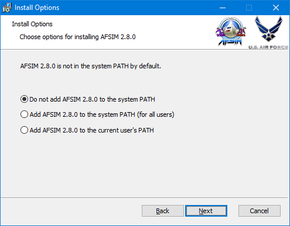
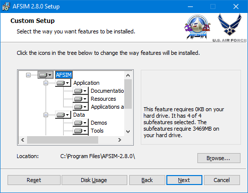
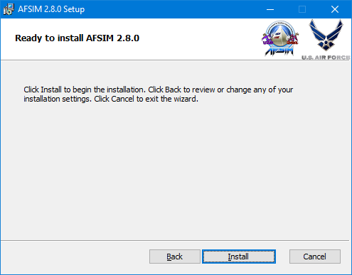
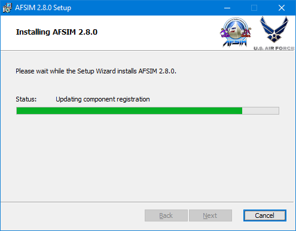
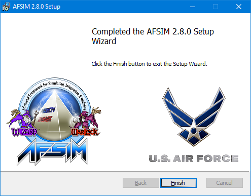

Install Instructions¶
This document describes how to install the AFSIM 2.9.0 suite of applications, data and tools.
Packaging of AFSIM Distribution¶
The AFSIM distribution described below is for the standard unclassified release from the USAF, and contains executables, scenarios, documentation and source code. The distribution file will be named AFSIM-2.9.0-<system-name>, where <system-name> may be e.g. win64 or lnx64-gcc4. You may also have downloaded or received a CD or other medium that contains distribution files named slightly differently, which may contain some or all of the standard release components.
There are two options for loading an AFSIM distribution onto your system. You may simply extract an archive file (.zip on Windows or .tar.gz on Linux), which will not modify the system registry, PATH, etc. or you may use one of the installers (.msi on Windows or .rpm/.deb on Linux). If extracting an archive, the unpacked directory tree will always contain a top-level directory, referred to below as <archive-name>.
Unpacking the archive results in the directory tree:
<archive-name>\bin (contains the compiled executables and binaries)
<archive-name>\demos (contains example demos)
<archive-name>\documentation (contains the documentation)
<archive-name>\resources (contains application resources, e.g. models and maps)
<archive-name>\scenarios (contains scenarios <optional>)
<archive-name>\swdev (contains the source code)
<archive-name>\tools (contains the analyst tools)
<archive-name>\training (contains the training)
Installing AFSIM results in the same directory tree, but paths are prefixed with <install-path>\AFSIM-2.9.0.
Windows¶
Zip¶
The distribution files are in standard ‘zip’ format. The contents may be extracted to the desired location using Windows Extractor, 7-Zip, WinZip or some other compatible program.
To remove AFSIM, simply delete the folder that was previously extracted, as no other system modifications were made.
MSI¶
The distribution files are in standard Windows Installer (MSI) format. The contents may be installed by double clicking the MSI file in a file manager or by executing from the command line to begin the installation. Continue with selecting installation options as follows:
Welcome dialog, click Next to continue…
End-User License Agreement, click “I accept the terms in the License Agreement” then click Next to continue…
Choose whether to add AFSIM to the PATH environment variable, for the system or the current user only, and click Next to continue…
Customize the features that will be installed and choose the install location if different than the default. Click Next to continue…
Click Install to begin installation with the previously selected options and setup…
Progress dialog and status will show during installation.
Upon completion, click Finish to exit the Setup Wizard and begin using AFSIM.

To uninstall go to Add or Remove Programs from the Windows Control Panel, find AFSIM 2.9.0 in the application list, and select Uninstall.
Linux¶
Tarball¶
To extract the standard release, open a terminal window, change the directory to the desired location, and extract the contents of the archive:
$ cd <path> $ tar -xzf AFSIM-2.9.0-lnx64-gcc4.tar.gz
To uninstall the package, simply delete the folder that was previously extracted, as no other system modifications were made.
RPM¶
To install the standard release, open a terminal window, change the directory to where the RPM file is located and install the package to /opt/afsim-2.9.0 directory:
For a new install:
$ cd <path> $ rpm -ivh AFSIM-2.9.0-lnx64-gcc4.rpm
For an upgrade install:
$ cd <path> $ rpm -Uvh AFSIM-2.9.0-lnx64-gcc4.rpm
To uninstall the standard release, open a terminal window and uninstall the package.
$ rpm -ev afsim
DEB¶
To install the standard release, open a terminal window, change the directory to where the DEB file is located and install the package to /opt/afsim-2.9.0 directory:
$ cd <path> $ dpkg -i AFSIM-2.9.0-lnx64-gcc4.deb
To uninstall the standard release, open a terminal window and uninstall the package.
$ dpkg -r afsim